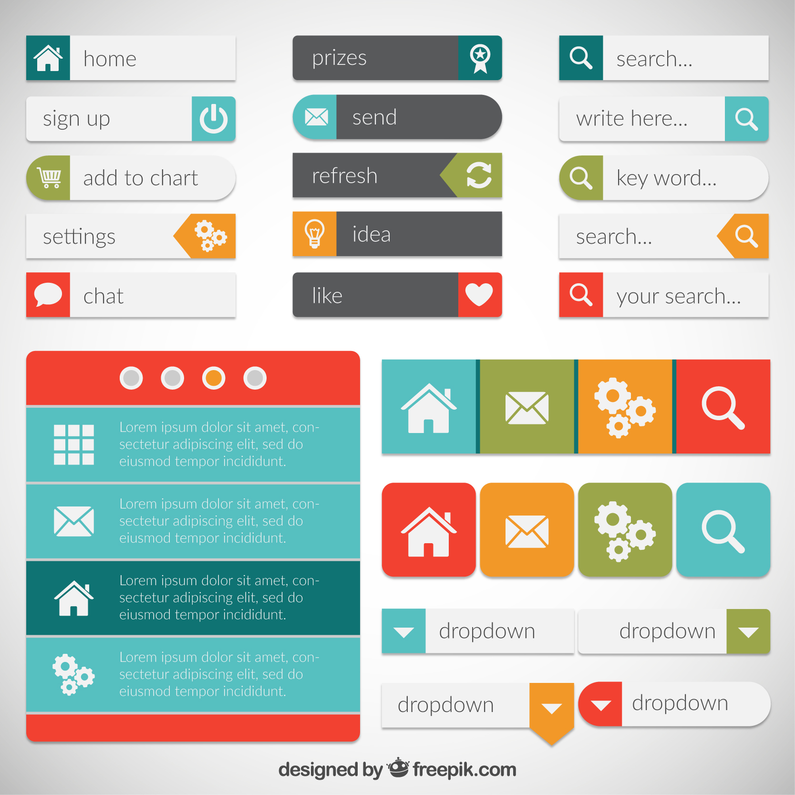
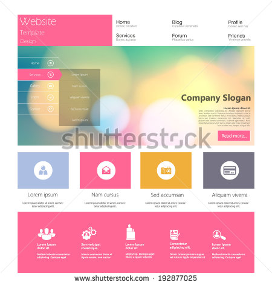
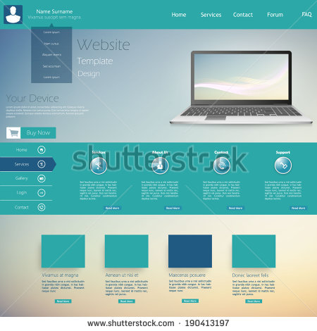

TECHNOLOGIES : HTML5, CSS3, JavaScript, JQuery, AngularJS, Bootstrap, JSON, any other Open-source CSS and Javascript Libraries
Duration : 9:00 AM, 19th December, 2015 to 9:00 PM, 20th December, 2015
Submissions
Ex : prasad_sahu.zip
Keep these in mind
-
Calculator Application
Create responsive UI with proper functionality of calculator as shown in the image.

-
Math Fun
- A simple mathematical quiz web application. Participant will be given 30sec for each task as shown in the given image.
- When timer runs out app will display the next task.
- The logic to generate the task should be done using JS/jQuery/AngularJS any other java script library.
- There is no predefined set of tasks or any database attached. Tasks should be generated on the fly.
- When user submits the answer app evaluates and shows the consolidated score in the sidebar.
- When the user opts to end the quiz it should show the score along with some basic analytics such as the average time taken for each task and the accuracy.

-
UI Design Test 1
Participants are required to build a fluid, cross-platform and cross-device compatible web page with several functional elements as shown in the image. The code should be in such a way that it can be used as an independent component in any other application. The UI should be similar to image shown. To put it simply, it should be compatible with code reuse given the respective library is included. 
-
UI Design Test 2
For this task participants are required to design a Single page application as shown in either of the images. You can use plugins and images of your choice for slideshow and background. The point is to build a functional single web page application with cross-device compatibility. The UI should be similar to images shown.
 Task 4a Task 4b -
Typing Practice application using Javascript
Well! You all are familiar with Typing Master Pro. If not, please google it. This time here, we are making it simpler. Participants are requested to create a minimal typing test app which at the end should show the analytics such as accuracy, words per min and strokes per min if possible.
-
Color Confusion Game
A minimal JS based game to test one's observatory skills. As you can see in the below image, one color name is different from its background. (Ex : 3rd bar, it says "Black" while the background is "Violet"). When user starts, in the given time span, user should pick the odd one out. Once an option is chosen, the game should continue with new colors and options. Once the time ends, it should show user's accuracy (In percentage).

-
Image Puzzle
Build an Image puzzle app using JS/JQuery with some styling too.

-
Snake Game (Traditional Old Mobile Snake Game)
Build traditional old snake game using JS/JQuery along with a Nice and fluid UI if possible.
-
OAuth2 Usage (Login with Google+, Facebook, Twitter)
Create a demo app on OAuth2 usage that contains Google+ login, Facebook Login and Twitter Login
-
Solar System Simulation
Create a webpage using JS/JQuery/CSS3 that renders a prototype of Solar System. Make good use of CSS3 animation.
-
Any AngularJS Single Page Application
Just to give you the taste of AngularJS! Create any web app of your choice using AngularJS.
-
Any Javascript based game
Build a simple puzzle or game of your choice using JS/JQuery.
-
Any Hybrid Mobile Application
Again just to give a glimpse of Hybrid Mobile Application Development technologies. Build a simple hybrid mobile app using the technology of your choice.
References : Windows 10 Calculator, Shutterstock, Freepik